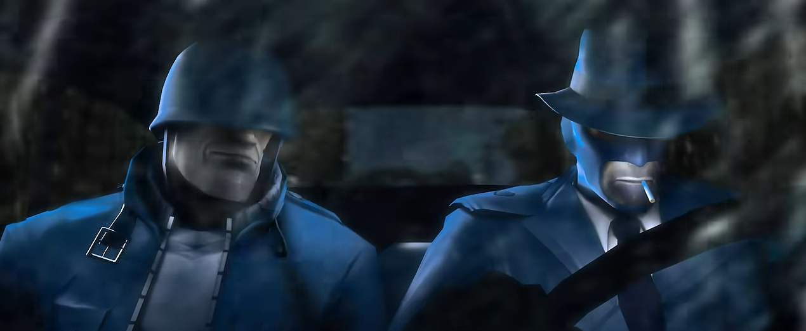

WHO'S IN IT?
Emesis Blue features Team Fortress 2's Mercenaries as a cast. However, much different versions. There are 3 central protaganists, Medic, Soldier, and Spy. But in Emesis Blue, they (mostly) have names. Fritz, Mr. Doe, and Detective Murnau.
As the movie continues, the perspective shifts to show Soldier as the main protaganist, as Fritz and Murnau take much more grey positions. Some more favorable than others.
There's also Jules Archibald, the missing governer, Murnau's boss, and the catalyst that got this moving. Archibald is portrayed via TF2's scapped 10th character 'class' the 'Civillian.'
Jane Doe, mainly referred to as 'Soldier' by Murnau, is a washed up war veteran who was assigned to be Murnau's assistant. Given the time period, there is stigma around veterans, and Murnau dislikes Soldier as an assistant partly because of it. Soldier is resourceful, and functions akin to that of a unbeliveably loyal gaurd dog, he just isn't gaurding the best people. In terms of Emesis Blue's narrative, he is a 'victim' of the system.

Aformentioned in the references page, Fritz is a Medic. He's seen the horrors of the Respawn Machine first hand, and they continue to haunt him. Literally by just how he moves indicates that he's bothered. Despite the horrors, he's still a very caring Medic. If you knew about how Medic is canonically in TF2, it's definitely different.
- Stalingrad
- The Hunter
- The Butcher
- The Conagher Brothers
- Various Unimportant Zombies